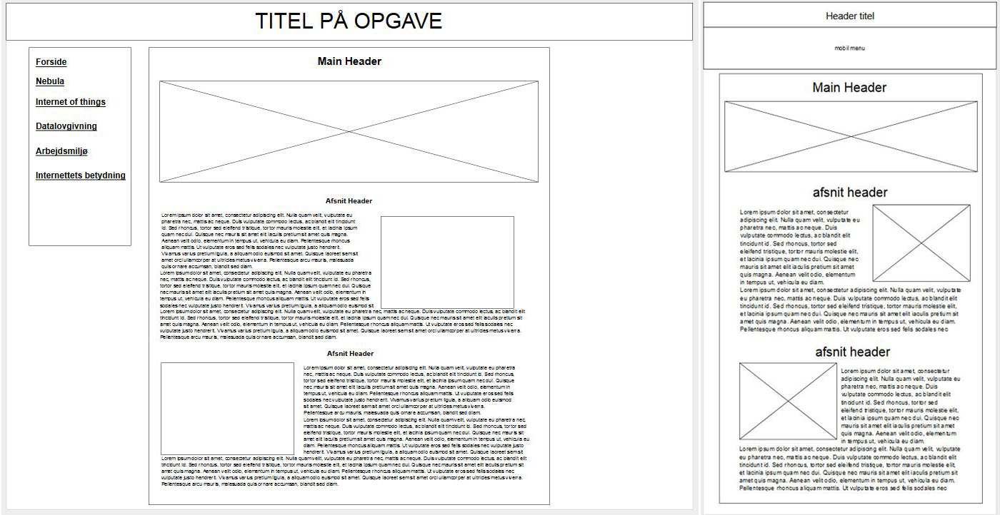

Forside

Portfolio-sitet
(Ingen tekst er endelig)
Mit portfolio-site er bygget meget simpelt op. Jeg har min menu, som ikke er links til undersider, men er Javascript, som bytter nogle elementer ud med hinanden.
Jeg mener at det er bedst at bruge, fordi det mindsker tiden for at loade nyt content på et site som det her, og mængden af plads mine filer bruger er mindre.
Jeg har mine underfaner, som er nemme at komme til, og det er nemt at læse min information på siden.
Wireframe til sitet

Mit wireframe til sitet (normal web til venstre, lille skærm/smartphone til højre) er ikke særlig advanceret. Man scroller igennem hovedblokken af indhold, mens man har en menu på venstre side til hurtigt at springe videre til andet indhold.
Smartphone-designet er lavet på samme måde i forhold til den store blok, men menuen sidder nu toppen, og er "drop-down".
Link til Moqups.com
Farver of tema

Efter at have siddet i lidt tid i Paletton uden at finde et farvetema som passede til mine ideer, valgte jeg at gå efter et sort/hvid tema i stedet. Jeg følte at overgangen mellem sort og hvid passede meget godt til et site hvor man skal læse meget, så det ikke bliver hårdt for øjnene.
Link til Paletton.com